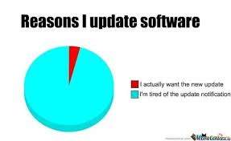

Welcome to the cave of Cybersecurity! Learn fast, hack smart, keep your skills brave.
Mastering these systems to sharpen your might, in cybersecurity's never-ending fight:
Now that you've learned the systems you need, here are the techniques that help you succeed:
Show up, level up, don't fall behind. Learn from mistakes, keep wins in mind. Cyber's your stage, your skills will shine.